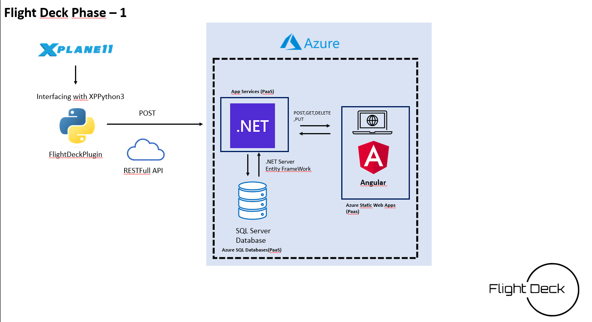

Flight Deck Simulators Solution
The Flight Deck Simulators solution is a platform for virtual pilots and airlines to collect and analyze data from their flights. With this solution, users can track their performance and compare it with others in the community, and perform complex data analytics to extract meaningful insights from their flight data.
Getting Started
- Install X-Plane flight simulator on your computer.
- Download and install the Flight Deck Simulators application.
- Launch the Flight Deck Simulators application and connect it to your X-Plane flight simulator.
- Start flying in X-Plane and the Flight Deck Simulators application will collect real-time data from your flight.
- Use the user-friendly interface to view and analyze your flight data, and gain valuable insights into your performance.
Features
- Download and extract the following repository into your python-plugins folder under X-Plane
X-Plane Flight Deck Simulators Plugin
- Real-time data collection and analysis from X-Plane flight simulator.
- User-friendly interface for viewing and analyzing flight data.
- Integration with Microsoft SQL Server for data storage and retrieval.
- Scalable and reliable infrastructure hosted on Azure.
Future Releases
In future releases, the Flight Deck Simulators solution will provide more sophisticated data analytics and reporting capabilities, including the ability to track performance metrics, identify patterns and trends, and perform predictive analysis.
How it works
